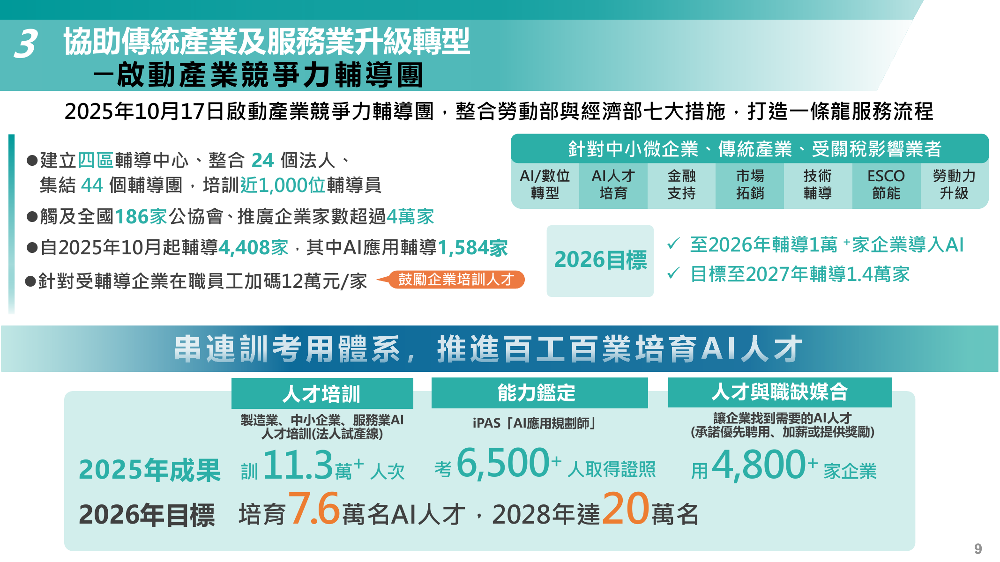
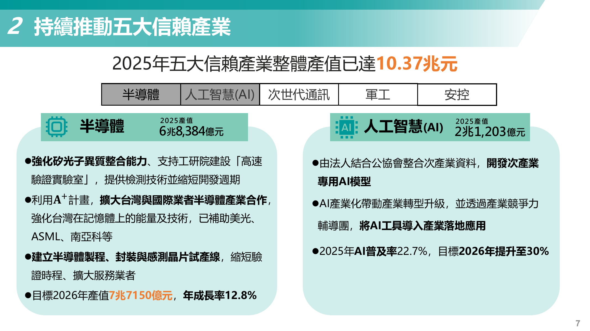
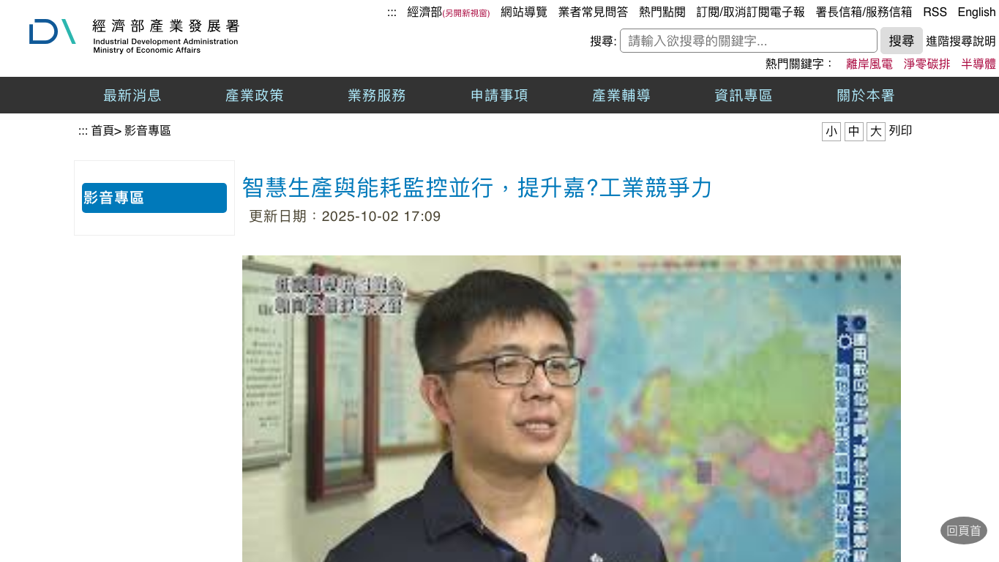
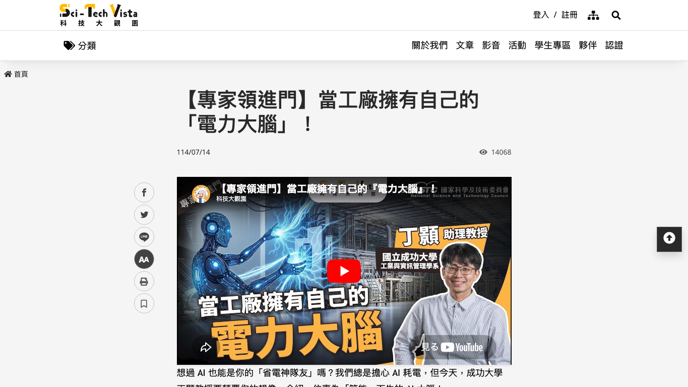
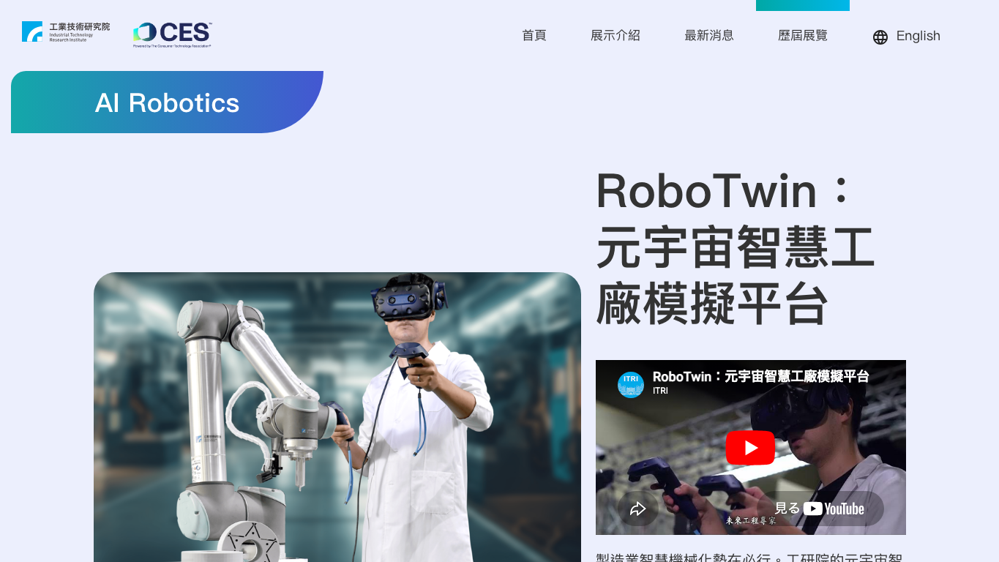
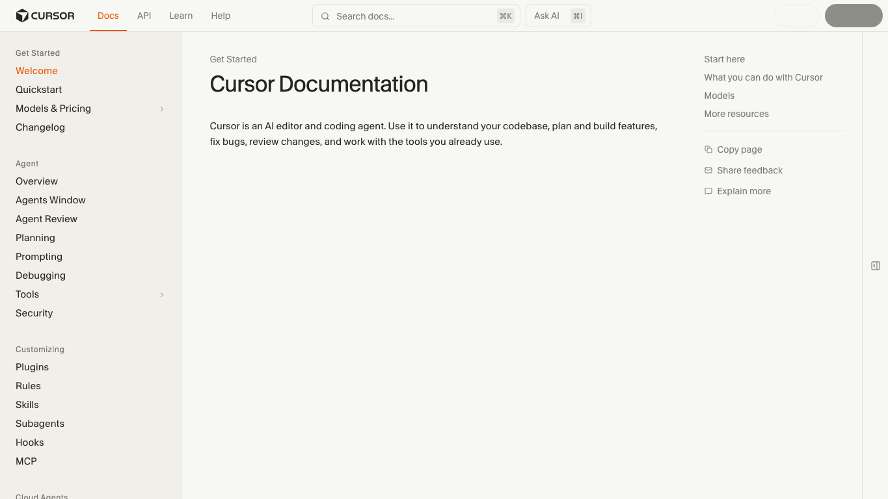
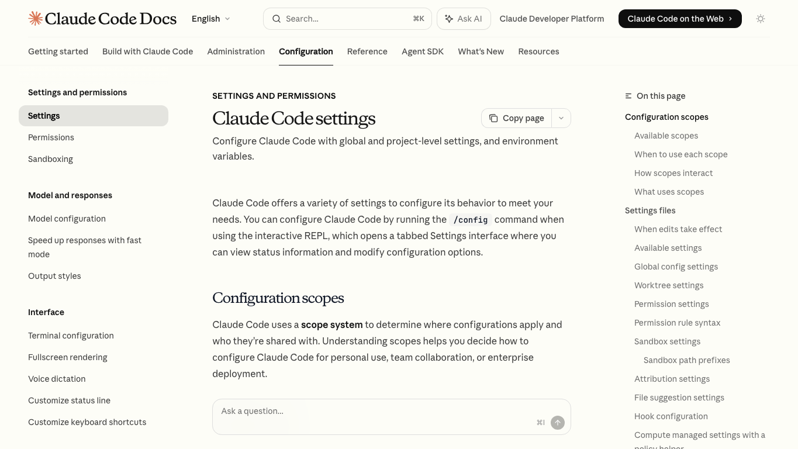
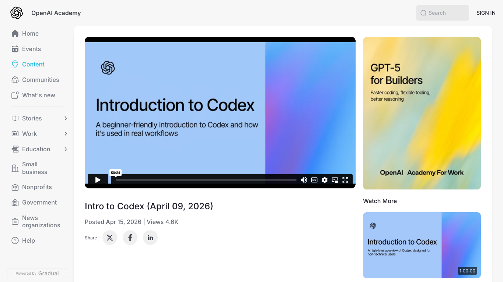
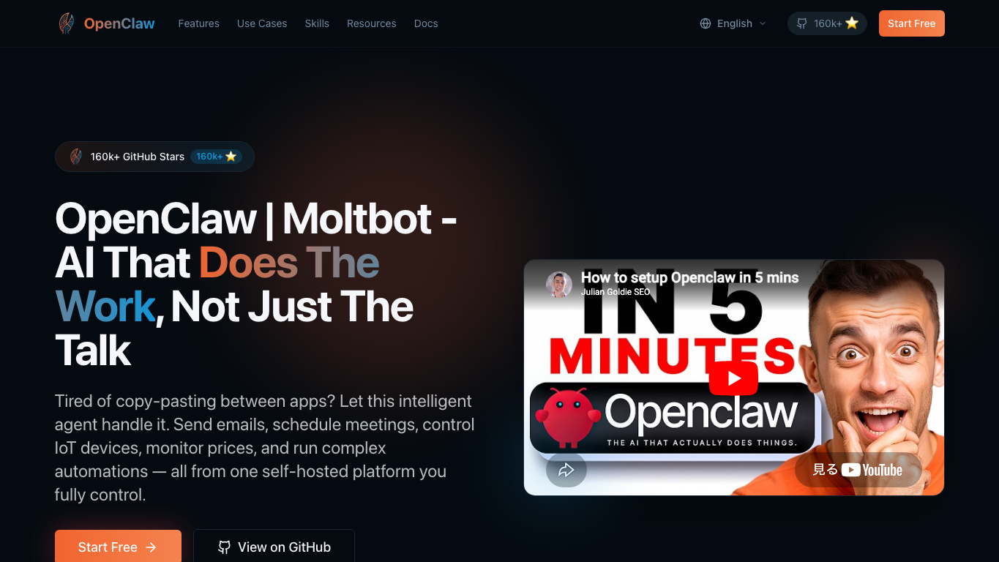
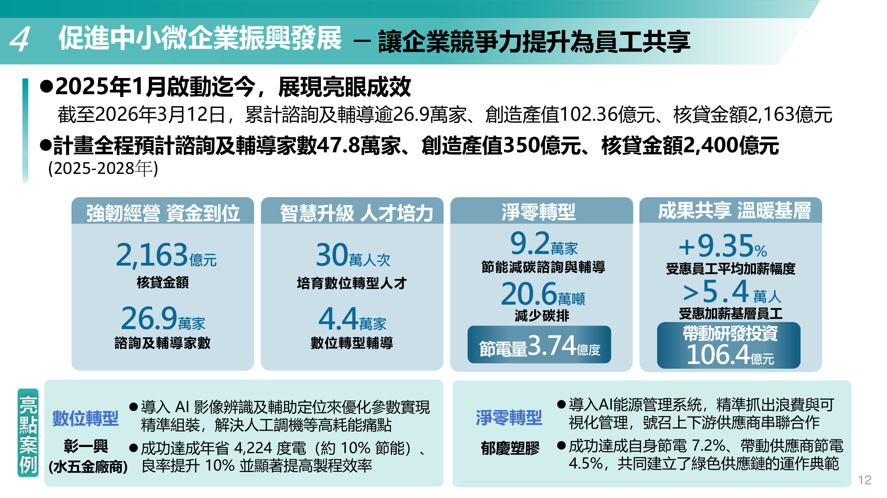

未來技術人才的機會與挑戰。從台灣智慧製造案例、工程工具鏈與現場風險，重新看技術人才的價值。

當模型連到感測器、設備、產線和派工系統，AI 的答案就不只是文字，而會變成現場行動。

產發署案例提到，透過工研院導入 MES 與能源管理系統後，每月減少 236 小時異常處理時間，人工錯誤率歸零，一年節省 3 萬度電、減碳 17 公噸。

可在這裡停下來問學生：這些成效不是模型自己產生的，而是 MES、能源管理、異常紀錄與現場改善流程共同作用的結果。




這頁不需要現場教安裝。重點是讓學生看到 agentic coding 的工作方式：它會讀專案、提出計畫、修改檔案、執行檢查，但每一步都需要人設邊界。
Codex 的重點不是「幫我寫一段程式」，而是讓任務能被拆解、修改、測試與 review。真正的專業在於交辦品質與審查品質。


而在於能不能把 AI 放進真實流程，並證明它可靠。
整理、查詢、轉檔、草稿會被壓縮；問題定義、現場判斷、跨部門溝通、品質驗證會被放大。

真正專業的團隊，不是盲目自動化，而是知道哪裡要停下來查證。
這不是保守，而是讓 AI 可以安全進入真實工作的最低條件。